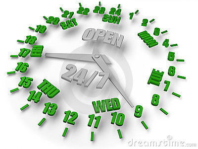

Welcome! (This field is for presenter notes and commentary.)
Dymamiske språk
Anders.Karlsen@steria.no
@anderskar
SPK Perform 2010
Automatisk godkjenning av Pensjon
Ny og kritisk funksjonalitet
Fortløpende justering var nødvendig
Det tar en helg å produksjonssette ny kode
Ørjan M. Lillevik, Sterk blanding 7/11-2010
Ruby
(JRuby)
Regler for utføring av oppgaver i eget skriptspråk
Eksempel på konfigurasjon
def skal_autoutfoere(sak, beregnet_pensjon)
grenseverdi_krav_refusjon_status_utb = 345
grenseverdi_etterbetaling_refusjon_status_utb = 454
grenseverdi_krav_utb_status_ube = 0
grenseverdi_etterbetaling_utb = 10
grenseverdi_endring_redusert_pensjon = 4234
sak.finnesAapenSakFraFoer(skalSjekkeOmDetFinnesAapenSakFraFoer)
bp.harUbehandletKravMedStatusUTBOverGrenserverdi
bp.harKravPaaRefusjonspensjonOverGrenseverdi
bp.harEtterbetalingPaaRefusjonspensjonOverGrenseverdi
bp.harEtterbetalingMotMedlemOverGrenseverdi
bp.harEndringILoependePensjonOverGrenseverdi
bp.harFlereProdukterEllerParalellePensjonsuttak()
end
Dynamiske språk lar oss endre applikasjonen mens den kjører

Javascript av Brendan Eich for Netscape i 1995
«JS had to “look like Java” only less so, [it had to] be Java’s dumb kid brother or boy-hostage sidekick . Plus, I had to be done in ten days or something worse than JS would have happened.»
Eksempel på javascript
Kjør kommando
Fordeler med node.js
Bruker javascript i browser
Samme kode på klient og server
Dynamsisk språk som kan oppdateres uten nedetid
Referanser (ref nodejs.org )
Ebay
Linkedin
Yahoo
Microsoft
Javascript er blitt voksen
Moores lov (1965)
Hastigheten på cpu og antall komponenter på en krets dobles hver 18. måned (populært sagt)
Altså
Problemet kommer når data forandrer seg
Løsning er data ikke har lov til å forandre seg
Lisp (1958)
John McCarthy (1927-2011)
Generering av html
<html>
<body>
<h1>Hello</h1>
<p>Hello Anders</p>
</body>
</html>
Generering av html med java
public String generateAnswer(String toName) {
StringBuilder result = new StringBuilder();
result.append("<html>");
result.append("<body>";
result.append("<h1>Hello</h1>");
result.append("<p>");
result.append("Hello ");
result.append(toName);
result.append("</p>");
result.append("</body>");
result.append("</html>");
return result.toString();
}
Generering av html med Lisp
(html [:body
[:h1 "Hello"]
[:p "Hello " toName]])
Homoiconic
Languages in which program code is represented as the language's fundamental data type are called 'homoiconic'
Lisp "Compiler" arkitektur
Clojure
Clojure er en dialekt av Lisp
Clojure kan kjøre på
JVM (Java Virtual Machine)
CLR (Common Language Runtime)
og i browser